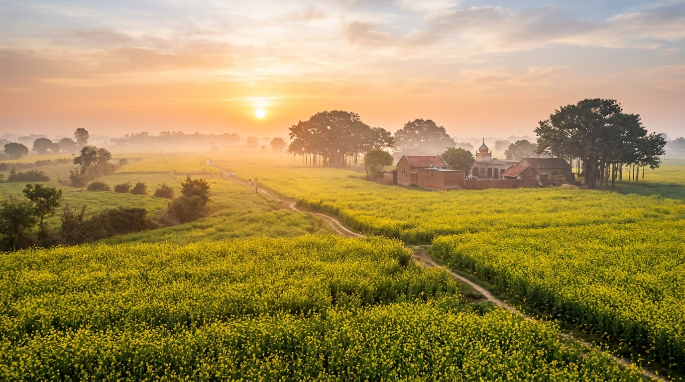
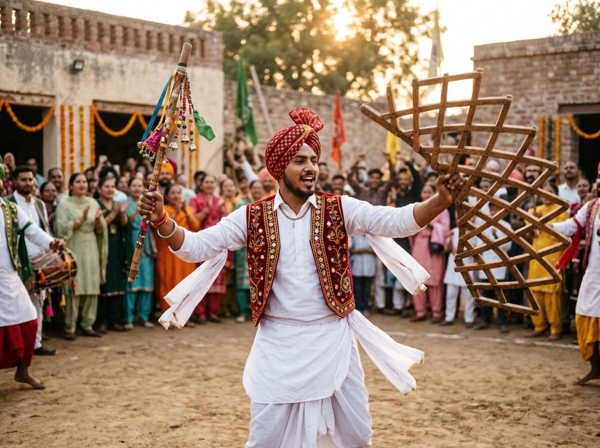
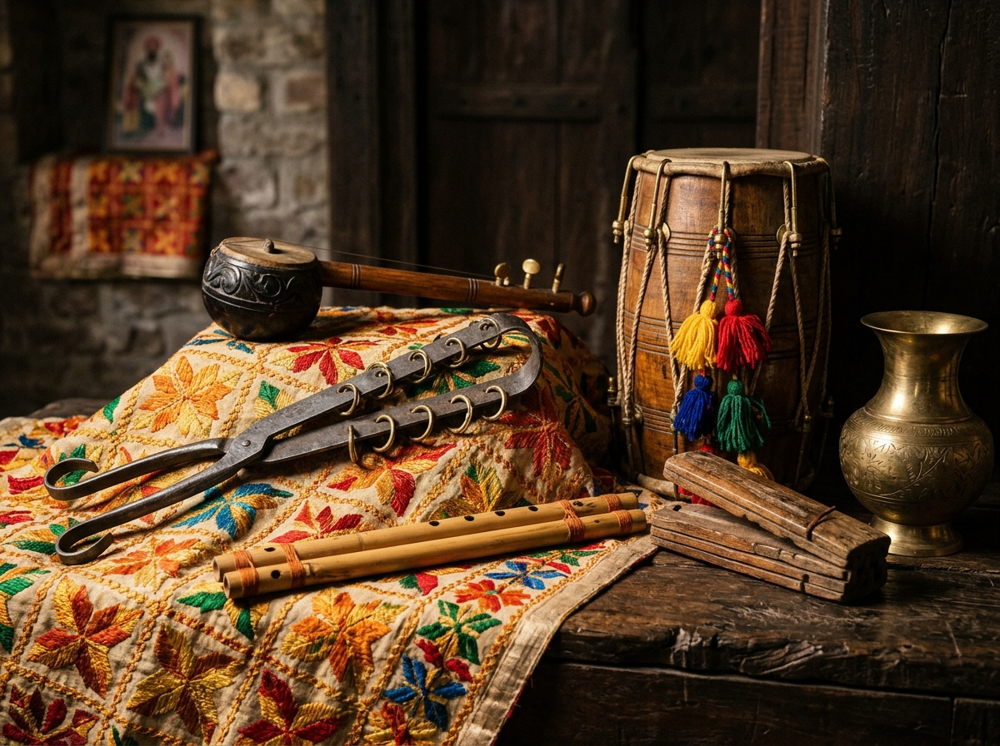
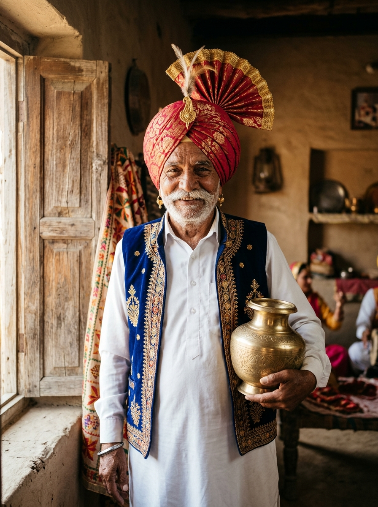
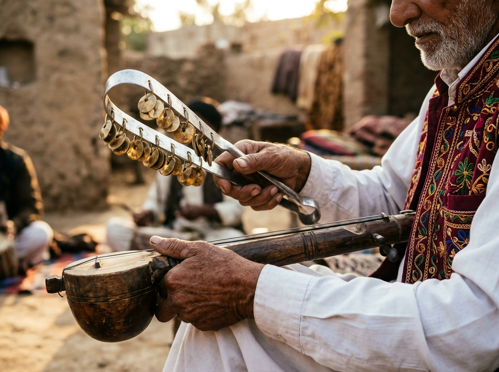
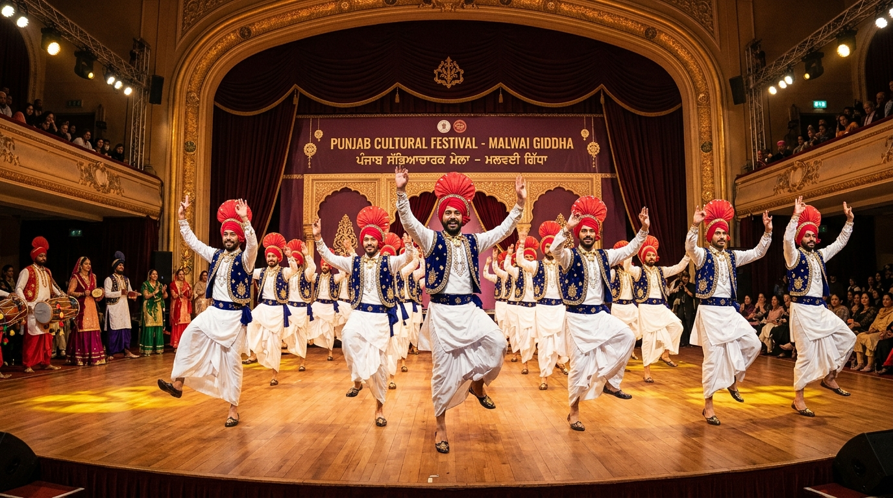
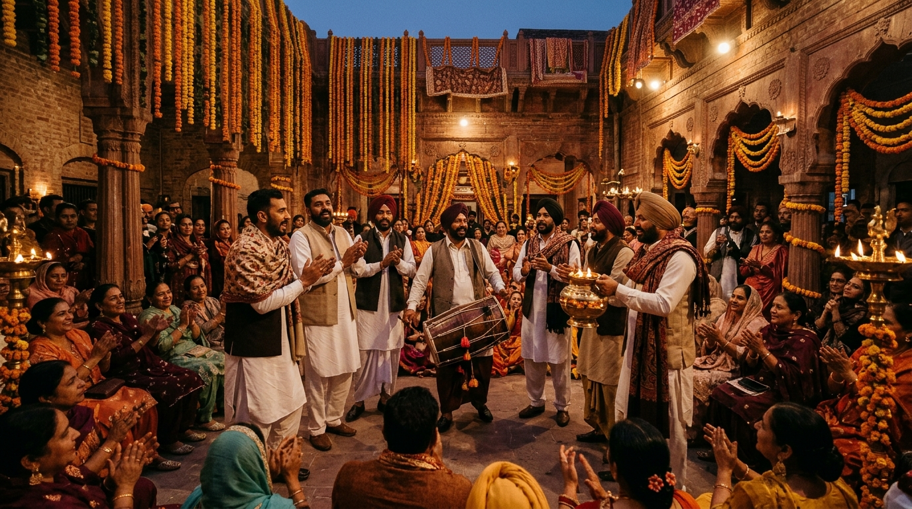

A Folk Art Shaped by Community & Storytelling
Malwai Giddha is one of Punjab's most expressive traditional folk dance forms, performed predominantly by men in a vibrant, welcoming semi-circle. Unlike acrobatic stage routines built purely around high-speed leaps, Malwai Giddha draws its magnetism from poise, witty lyrical banter, facial expression, and rhythmic coordination among fellow artists.
Performers weave humour, affection, agricultural metaphors, and social observations into sung verses, turning every gathering—whether a village courtyard evening or a royal wedding stage—into an intimate dialogue with the audience.

Evolved Through Village Gatherings & Oral Tradition
Cultural scholars and folk chroniclers note that Malwai Giddha developed organically within rural communities of Punjab's Malwa belt—passed down orally through village elders, wedding gatherings, and seasonal fairs rather than written manuals.
Historically, it became affectionately associated with community elders (often celebrated in vernacular memory as babeyan da giddha) as well as younger male folk artists who gathered during harvest celebrations, Lohri evenings, and joyous family weddings to recite Boliyan and lift the spirits of the neighbourhood.
Because its lineage rests in living oral tradition, regional variations of melodies, props, and couplets have been lovingly preserved across generations without losing their spontaneous warmth.

Deeply Rooted in the Plains of Malwa
Stretching south of the Sutlej River across districts such as Bathinda, Sangrur, Barnala, Mansa, Moga, Faridkot, Sri Muktsar Sahib, Ludhiana, and Patiala, the Malwa region carries a rich dialect and musical sensibility all its own.
The rhythm of Malwai Giddha mirrors the cadence of Malwai Punjabi speech—generous, earthy, humorous, and unhurried. Mentions of blooming mustard fields, village wells, family hospitality, and festive fairs recur throughout its songs, grounding every performance in the landscape of Malwa.

Traditional Performances & Punjabi Boliyan
A signature performance opens with an evocative vocal call as the lead singer steps forward with a tumbi or chimta, holding the opening line of a Boli while fellow dancers listen attentively in an arc.
As the verse reaches its punchline or lyrical turn, the entire circle catches the refrain—clapping crisply, snapping the wooden sapp, flicking the kato, and rotating into lively pair formations in the center.
“ਆਓ ਨੀ ਸਖੀਓ ਰਲ-ਮਿਲ ਬੋਲੀਆਂ ਪਾਈਏ, ਖੁਸ਼ੀਆਂ ਦੇ ਵੇਹੜੇ ਗਿੱਧਾ ਸਜਾਈਏ।”
Every Boli bridges melody, gentle wit, and shared celebration.

Traditional Costumes & Handcrafted Instruments
Visual dignity is central to Malwai Giddha. Artists wear crisp white cotton kurtas paired with flowy chadra (or tehmad) lower wraps, richly embroidered velvet or wool waistcoats (jackets), traditional leather juttis, and tall pleated turla turbans crowned with a fan-like crest.
Each performer brings life to an acoustic ensemble featuring the steel chimta, single-string tumbi, rope-tuned dholki, twin algoza flutes, folding wooden sapp, tasselled kato, resonant bugdu, and brass gadva.
Explore Performance Formats

Cultural Importance & Preservation
In an era of recorded playlists and fast-paced digital entertainment, live Malwai Giddha preserves face-to-face community joy, acoustic musical skill, and idiomatic Punjabi poetry.
By presenting Malwai Giddha at weddings, youth cultural festivals, school showcases, and city heritage stages, our troupe ensures younger generations witness authentic turban craftsmanship, folk instrument mastery, and respectful Punjabi celebration firsthand.
Browse Heritage GalleryHeritage Moments




Bring Authentic Malwai Giddha to Your Event
Partner with our traditional folk ensemble for weddings, Jaggo evenings, Lohri gatherings, and cultural festivals across Punjab.
Enquire for Bookings